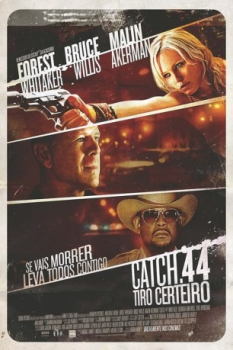

Catch .44 (2011)


Quando não se tem mais nada a perder, só resta lutar até o fim.

Avaliação (TMDb):


5.1/10 (241 votos)
Avaliação (Usuário):
País:United States, 93 minutos
Idiomas falados:Inglês, Português
Gênero(s):Drama, Ação, Suspense
Diretor(s):Aaron Harvey
Codec:MPEG-2 (DVD)
Número: 895
Sinopse:
Três amigos são contratadas para interceptar um carregamento de drogas em um restaurante isolado. Entretanto, o que parecia um trabalho simples se transforma em uma cadeia de eventos incontroláveis e logo elas percebem que a situação se tornou muito maior do que imaginavam.
Elenco:
Bruce Willis, Malin Åkerman, Nikki Reed, Deborah Ann Woll, Forest Whitaker, Brad Dourif, Shea Whigham, Michael Rosenbaum, Reila Aphrodite, Edrick Browne
Tipo de mídia: DVD5,
Legendas: Inglês, Português
Alugado: Não
Tela: 2.35:1